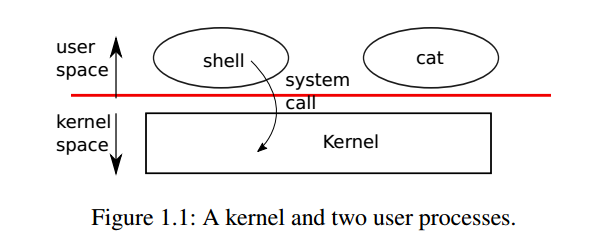
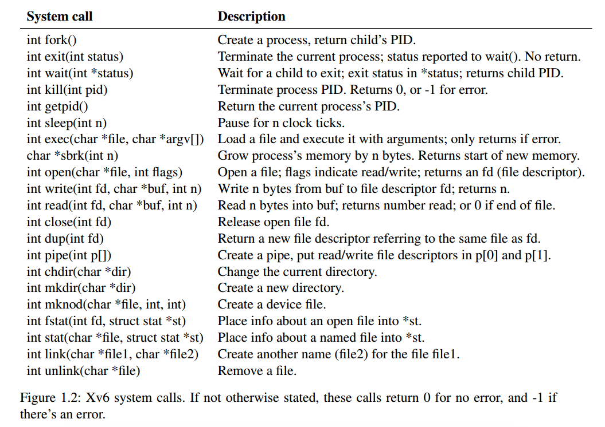
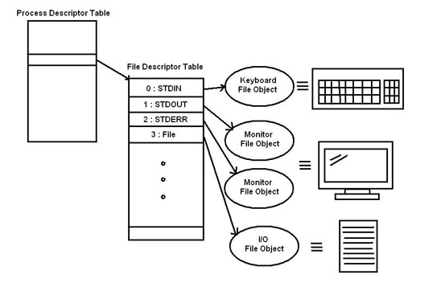
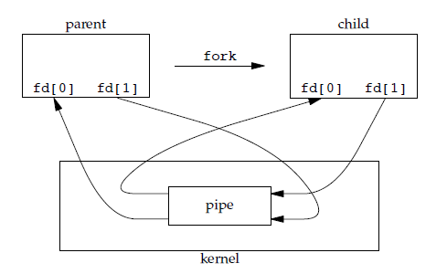

xv6-book Chapter1
Chapter1 操作系统接口
操作系统是硬件的抽象表示，需要通过接口对用户程序提供服务。unix的接口设计十分成功，而xV6是一个模仿unix设计的操作系统，理解xv6是理解现代操作系统的良好开端。
但是哪怕是简单的xv6系统，我们也需要一个框架形的学习方式，Chapter 1主要从用户使用操作系统的角度出发，先介绍操作系统提供的接口，即系统调用。
用户的程序运行在用户态，内核执行的程序运行在内核态，如果用户需要发起需要操作系统参与的活动时（例如读写磁盘，删除文件），不能直接执行操作，而是要利用操作系统的提供的接口，这个接口被成为系统调用（系统调用是一串预先实现好的函数）。如下图所示

为什么要这样做呢？
- 它为用户空间提供了一种统一的硬件的抽象接口，用户程序不必关心底层的具体实现。例如对于读写操作，用户不关心存储介质是固态硬盘还是机械硬盘，只需要往文件中读写即可，至于信息到底保存在哪里，如何与硬件对接，由操作系统负责完成
- 系统调用保证了系统的稳定和安全。作为硬件设备和应用程序之间的中间人，内核可以基于权限和其他一些规则对需要进行的访问进行裁决。举例来说，这样可以避免应用程序不正确地使用硬件设备，例如窃取其他进程的资源。
- 假设没用内核，应用程序可以随意访问硬件，几乎就没法实现多任务和虚拟内存
下图列出了xv6操作系统的所有系统调用，本章的其余部分概述了xv6的服务——进程、内存、文件描述符、管道和文件系统——并通过代码片段对它们进行了说明，并讨论了shell (Unix的命令行用户界面)如何使用它们。
注意：进入unix系统看到的shell窗口是一个用户程序而不是内核的一部分，xv6的shell代码可以在user/sh.c找到。

进程与内存
xv6进程由用户空间内存(指令、数据和堆栈)和内核私有的每个进程状态组成。
1 | |
每个进程可以使用fork()系统调用创建一个新的子进程。其内存内容与父进程完全相同，父进程执行的fork会返回子进程的pid（进程的唯一标识符），子进程的fork返回0。以下面的代码为例：
1 | |
exec系统调用从存储在文件系统中加载新的内存映像替换调用进程的内存(可以理解为把一个程序替换为另一个程序)，一般搭配fork使用
shell就是一个特殊的程序，当你在shell界面输入命令时，shell会fork一个子进程，然后使用exec将子进程的内存空间替换为你输入的命令的内存空间（也就是把子进程变成你想要执行的进程），如果内存空间不够，可以使用sbrk这一系统调用扩宽。
如下方代码所示，主循环使用getcmd从用户那里读取一行输入。然后调用fork，创建shell进程的副本。父进程调用wait，而子进程运行该命令。
1 | |
I/O和文件描述符
文件描述符（File Descriptor，简称FD）是一个小整数，linux使用它来作为文件的唯一标识（文件是一个抽象概念，表示文件描述符引用的对象，不仅仅是文件夹里的文件，也可以是管道和设备），内核为每个进程维护了一个文件描述符表，这个表以为索引，再进一步指向文件的详细信息。

在Unix系统中，每个进程都有STDIN、STDOUT和STDERR这3种标准I/O（分别对应文件描述符0、1、2），它们是程序最通用的输入输出方式。几乎所有语言都有相应的标准I/O函数，比如，C语言可以通过scanf从终端输入字符，通过printf向终端输出字符
在这一部分内容中，主要涉及到两个系统调用，open，read和write可以[看这里](Linux系统中I/O操作的数据读写流程介绍 - 知乎 (zhihu.com))
I/O重定向详解
unix通过将fork和exec分离，实现了IO重定向（让已创建的FD指向其他文件）。
具体来说，fork复制父进程的文件描述符表及其内存，这样子进程打开的文件与父进程完全相同。系统调用exec替换调用进程的内存，但保留文件表，就使得shell命令输入的IO操作可以灵活的运用。只看概念很晦涩，不妨碍看看下面案例：
dup和dup2是IO重定向的涉及的核心系统调用
1 | |
1 | |
下面可以讲几个具体的样例：
1. 重定向标准输入
标准输入（文件描述符0）所对应的设备是键盘，当read指定FD=1时，实际上是read键盘输入的数据，那如果不想让键盘作为标准输入呢？比如说让程序从某个文件中读取输入数据，这就需要重定向标准输入
1 | |
2. 重定向标准输出
标准输出（文件描述符1）的设备是显示器，通过标准输出进行write时，数据会直接输出到显示器上。那么如果想让cout、printf直接将数据输出到文件，而不是显示屏上呢？那么就需要重定向标准输出。
1 | |
扩展：
3. 重定向错误输出
标准错误输出实际上与标准输出类似，都是将数据输出到显示器上，只不过标准错误输出是输出错误信息，C语言中常用的错误输出就是perror了，如下面打开一个不存在的文件，就会直接在显示器上输出报错信息，因此重定向的方式与重定向标准输出一样。
1 | |
4. 重定向恢复
在进行重定向后，如果想要恢复到重定向之前的状态，可以在重定向之前用dup函数保留该文件描述符对应的文件表项，然后在需要恢复重定向的时候使用dup2重定向到原来的文件表项，以重定向后恢复标准输出为例：
1 | |
管道（pipe）
管道是一个小的内核缓冲区，作为一对文件描述符公开给进程，一个用于读取，一个用于写入。将数据写入管道的一端，使该数据可用于从管道的另一端读取。管道为进程提供了一种通信方式。
下面的示例代码运行程序wc，标准输入连接到管道的读取端:
1 | |
上述的例子中，如果管道的缓冲区中没有可用的数据，管道上的读操作要么等待数据被写入，要么等待指向写端的所有文件描述符被关闭，在后一种情况下，read将返回0。
注意：由于父进程和子进程共有两对管道文本描述符，但整个数据传输过程中只会用到一对描述符，如果读取端不关闭多余的写入端口，那么wc将永远不会结束，即读取端永远等待自己没有使用的那个写入端写入数据。

文件系统
暂时没看懂